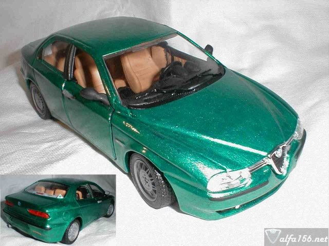

Didn't I tell you? I've got two Alfas! This one is a little smaller than
my first one. This is the Burago 1/24 model of the Superturismo (1998).
But I painted it to look a bit more like the one in my garage. Not quite
happy with the green, but it was as close as I could get.